3 Population Structure and Correlations Among Loci
Individuals rarely mate completely at random; your parents weren’t two Bilateria plucked at random from the tree of life. Even within species, there’s often geographically-restricted mating among individuals. Individuals tend to mate with individuals from the same, or closely related sets of populations. This form of non-random mating is called population structure and can have profound effects on the distribution of genetic variation within and among natural populations.
Populations can often differ in their allele frequencies, either due to genetic drift or selection driving differentiation among populations. In this chapter we’ll talk through some ways to summarize and visualize population genetic structure. Population differentiation is also a major driver of correlations in allelic state among loci, and we’ll start our discussion of these correlations at the end of this chapter. One reason for talking about population structure so early in the book is that summarizing population structure is often a key initial stage in population genomic analyses. Thus you’ll often encounter summaries and visualizations of population structure when we read research papers, so it’s good to have some understanding of what they represent.
3.1 Inbreeding as a summary of population structure.
Our statements about inbreeding, and inbreeding coefficients, represent one natural way to summarize population structure. In the previous chapter, we defined inbreeding as having parents that are more closely related to each other than two individuals drawn at random from some reference population. The question that naturally arises is: Which reference population should we use? While I might not look inbred in comparison to allele frequencies in the United Kingdom (UK), where I am from, my parents certainly are not two individuals drawn at random from the world-wide population. If we estimated my inbreeding coefficient \(F\) using allele frequencies within the UK, it would be close to zero, but would likely be larger if we used world-wide frequencies. This is because there is a somewhat lower level of expected heterozygosity within the UK than in the human population across the world as a whole.
Building on this idea of inbreeding coefficients estimated at various levels, Wright (1943) developed a set of ‘F-statistics’ (also called ‘fixation indices’) that formalize the idea of inbreeding with respect to different levels of population structure (Wright 1943, 1949). See Figure 3.1 for a schematic diagram. Wright defined \(F_{\mathrm{XY}}\) as the correlation between random gametes, drawn from the same level \(X\), relative to level \(Y\). We will return to why \(F\)-statistics are statements about correlations between alleles in just a moment. One commonly used \(F\)-statistic is \(F_{\mathrm{IS}}\), which is the inbreeding coefficient between an individual (\(I\)) and the subpopulation (\(S\)). Consider a single locus, where in a subpopulation (\(S\)) a fraction \(H_I=f_{12}\) of individuals are heterozygous. In this subpopulation, let the frequency of allele \(A_1\) be \(p_S\), such that the expected heterozygosity under random mating is \(H_S = 2 p_S (1 - p_S)\). We will write \(F_{\mathrm{IS}}\) as
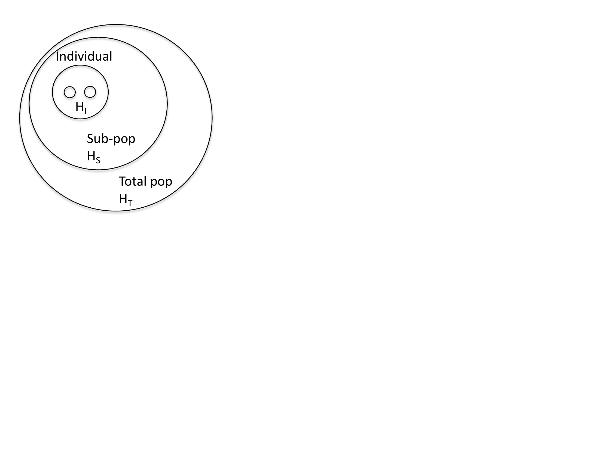
\[F_{\mathrm{IS}} = 1-\frac{H_I}{H_S}= 1-\frac{f_{12}}{2p_Sq_S}, \tag{3.1}\]
a direct analog of Equation 2.9. Hence, \(F_{\mathrm{IS}}\) is the relative difference between observed and expected heterozygosity due to a deviation from random mating within the subpopulation. We could also compare the observed heterozygosity in individuals (\(H_I\)) to that expected in the total population, \(H_T\). If the frequency of allele \(A_1\) in the total population is \(p_T\), then we can write \(F_{\mathrm{IT}}\) as
\[F_{\mathrm{IT}} =1-\frac{H_I}{H_T}= 1-\frac{f_{12}}{2p_Tq_T}, \tag{3.2}\]
which compares heterozygosity in individuals to that expected in the total population. As a simple extension of this, we could imagine comparing the expected heterozygosity in the subpopulation (\(H_S\)) to that expected in the total population \(H_T\), via \(F_{\mathrm{ST}}\):
\[F_{\mathrm{ST}} = 1-\frac{H_S}{H_T}=1-\frac{2p_Sq_S}{2p_Tq_T} . \tag{3.3}\]
We can relate the three \(F\)-statistics to each other as
\[(1-F_{\mathrm{IT}}) =\frac{H_I}{H_S} \frac{H_S}{H_T}=(1-F_{\mathrm{IS}})(1-F_{\mathrm{ST}}). \tag{3.4}\]
Hence, the reduction in heterozygosity within individuals compared to that expected in the total population can be decomposed to the reduction in heterozygosity of individuals compared to the subpopulation, and the reduction in heterozygosity from the total population to that in the subpopulation.
If we want a summary of population structure across multiple subpopulations, we can average \(H_I\) and/or \(H_S\) across populations, and use a \(p_T\) calculated by averaging \(p_S\) across subpopulations (or our samples from sub-populations). For example, the average \(\bar{F_{\mathrm{ST}}}\) across \(K\) subpopulations (sampled with equal effort) is
\[\bar{F_{\mathrm{ST}}} = 1 - \frac{\bar{H}_{S}}{H_T}, \tag{3.5}\]
where \(\bar{H}_S = {}^{1}\!/\!{}_{K} \sum_{i = 1}^{K} H_{S}^{(i)}\), and \(H_{S}^{(i)} = 2 p_{i} q_{i}\) is the expected heterozygosity in subpopulation \(i\). It follows that the average heterozygosity of the sub-populations \(\bar{H}_S \leq H_T\), and so \(\bar{F_{\mathrm{ST}}} \geq 0\) and \(\bar{F_{\mathrm{IS}}} \leq \bar{F_{\mathrm{IT}}}\). This observation that the average heterozygosity of the sub-populations must be less than of equal to that of the total population is called the Wahlund effect (Wahlund 1928). Furthermore, if we have multiple sites, we can replace \(H_I\), \(H_S\), and \(H_T\) with their averages across loci (as above).1
1 Averaging heterozygosity across loci first, then calculating \(F_{\mathrm{ST}}\), rather than calculating \(F_{\mathrm{ST}}\) for each locus individually and then taking the average, has better statistical properties as statistical noise in the denominator is averaged out.
Question 3.1 In a species of lemurs, you estimate the allele frequency to be \(20\%\). In a particular population, you estimate that the allele frequency is \(10\%\). In this population, only \(9\%\) of individuals are heterozygote. What is \(F_{IT}\), \(F_{ST}\), and \(F_{IS}\) for this population?
As an example of comparing a genome-wide estimate of \(F_{ST}\) to that at individual loci we can look at some data from blue- and golden-winged warblers (Vermivora cyanoptera and V. chrysoptera 1-2 & 5-6 in Figure 3.2).
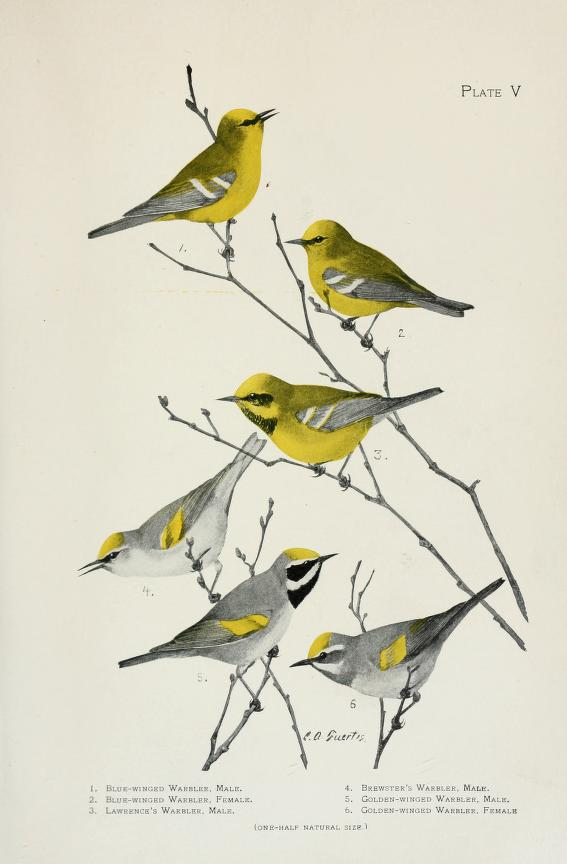
These two species are spread across eastern Northern America, with the golden-winged warbler having a smaller, more northernly range. They’re quite different in terms of plumage, but have long been known to have similar songs and ecologies. The two species hybridize readily in the wild; in fact two other previously-recognized species, Brewster’s and Lawrence’s warbler (4 & 3 in 3.2), are actually found to just be hybrids between theses two species. The golden-winged warbler is listed as ‘threatened’ under the Canadian endangered species act as its habitat is under pressure from human activity and and due to increasing hybridization with the blue-winged warbler, which is moving north into its range. Toews et al. (2016) investigated the population genomics of these warblers, sequencing ten golden- and ten blue-winged warblers. They found very low divergence among these species, with a genome-wide \(F_{ST}=0.0045\). In Figure 3.3, per SNP \(F_{ST}\) is averaged in \(2000\)bp windows moving along the genome. The average is very low, but some regions of very high \(F_{ST}\) stand out. Nearly all of these regions correspond to large allele frequency differences at loci in, or close, to genes known to be involved in plumage colouration differences in other birds.
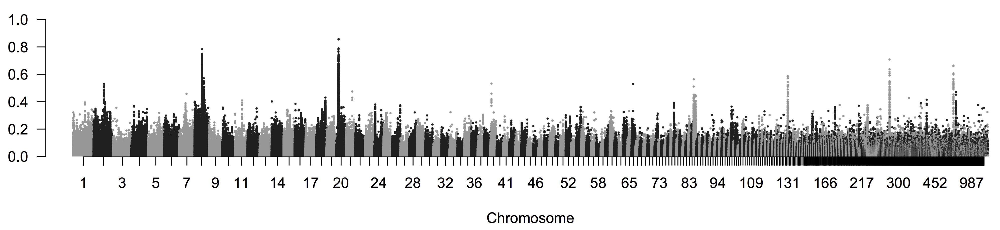
To illustrate these frequency differences Toews et al. (2016) genotyped a SNP in each of these high-\(F_{ST}\) regions. Here’s their genotyping counts from the SNP, segregating for an allele 1 and 2, in the Wnt region, a key regulatory gene involved in feather development:
| Genotypes | |||
|---|---|---|---|
| Species | 11 | 12 | 22 |
| Blue-winged | 2 | 21 | 31 |
| Golden-winged | 48 | 12 | 1 |
Question 3.2 With reference to the table of Wnt-allele counts:
A) Calculate \(F_{IS}\) in blue-winged warblers.
B) Calculate \(F_{ST}\) for the sub-population of blue-winged warblers compared to the combined sample.
C) Calculate mean \(F_{ST}\) across both sub-populations.
Interpretations of F-statistics.
Let’s now return to Wright’s definition of the \(F\)-statistics as correlations between random gametes, drawn from the same level \(X\), relative to level \(Y\). Without loss of generality, we may think about \(X\) as individuals and \(S\) as the subpopulation. Rewriting \(F_{\mathrm{IS}}\) in terms of the observed homozygote frequencies (\(f_{11}\), \(f_{22}\)) and expected homozygosities (\(p_{S}^2\), \(q_{S}^2\)) we find
\[F_{\mathrm{IS}} = \frac{2p_Sq_S - f_{12}}{2p_Sq_S} = \frac{f_{11}+f_{22} - p_S^2 - q_S^2}{2p_Sq_S}, \tag{3.6}\]
using the fact that \(p^2+2pq+q^2=1\), and \(f_{12} = 1 - f_{11} - f_{12}\). The form of eqn. (3.6) reveals that \(F_{\mathrm{IS}}\) is the covariance between pairs of alleles found in an individual, divided by the expected variance under binomial sampling. Thus, \(F\)-statistics can be understood as the correlation between alleles drawn from a population (or an individual) above that expected by chance (i.e. drawing alleles sampled at random from some broader population). 2
2 To see why the numerator of Equation 3.6 is the covariance of a discrete random variable see Appendix Equation A.40, where we imagine that the random variable is \(1\) if the alleles drawn from the population are the same and \(0\) if not. The denominator is the binomial variance of a sample of two, and so our equation is a covariance divided by a variance and so interpretable as a correlation (see Equation A.42)
We can also interpret \(F\)-statistics as proportions of variance explained by different levels of population structure. To see this, let us think about \(F_{\mathrm{ST}}\) averaged over \(K\) subpopulations, whose frequencies are \(p_1,\dots,p_K\). The frequency in the total population is \(p_T=\bar{p} = {}^{1}\!/\!{}_{K} \sum_{i=1}^K p_i\). Then, we can write
\[\begin{aligned} F_{\mathrm{ST}} &= \frac{2 \bar{p}\bar{q} - \frac{1}{K}\sum_{i=1}^K 2p_iq_i }{2 \bar{p}\bar{q}} = \frac{ \left(\frac{1}{K} \sum_{i=1}^K p_i^2 + \frac{1}{K} \sum_{i=1}^K q_i^2 \right) - \bar{p}^2-\bar{q}^2 }{2 \bar{p}\bar{q}} \\ &= \frac{\mathrm{Var}(p_1,\dots,p_K)}{\mathrm{Var}(\bar{p})}, \end{aligned} \tag{3.7}\]
which shows that \(F_{\mathrm{ST}}\) is the proportion of the variance explained by the subpopulation labels. 3
3 This follows because the numerator, in the middle step of Equation 3.7, is the averaged squared frequency minus the squared frequency, i.e. the variance (see Appendix Equation A.22).
Other approaches to population structure
There is a broad spectrum of methods to describe patterns of population structure in population genetic datasets. We’ll briefly discuss two broad-classes of methods that appear often in the literature: assignment methods and principal components analysis.
Assignment Methods
Here we’ll describe a simple probabilistic assignment to find the probability that an individual of unknown population comes from one of \(K\) predefined populations. For example, there are three broad populations of common chimpanzee (Pan troglodytes) in Africa: western, central, and eastern. Imagine that we have a chimpanzee whose population of origin is unknown (e.g. it’s from an illegal private collection). If we have genotyped a set of unlinked markers from a panel of individuals representative of these populations, we can calculate the probability that our chimp comes from each of these populations.
We’ll then briefly explain how to extend this idea to cluster a set of individuals into \(K\) initially unknown populations. This method is a simplified version of what population genetics clustering algorithms such as STRUCTURE and ADMIXTURE do. (Pritchard et al. 2000; Alexander et al. 2009)
A simple assignment method.
We have genotype data from unlinked \(S\) biallelic loci for \(K\) populations. The allele frequency of allele \(A_1\) at locus \(l\) in population \(k\) is denoted by \(p_{k,l}\), so that the allele frequencies in population 1 are \(p_{1,1},\cdots p_{1,L}\) and population 2 are \(p_{2,1},\cdots p_{2,L}\) and so on.
You genotype a new individual from an unknown population at these \(L\) loci. This individual’s genotype at locus \(l\) is \(g_l\), where \(g_l\) denotes the number of copies of allele \(A_1\) this individual carries at this locus (\(g_l=0,1,2\)).
The probability of this individual’s genotype at locus \(l\) conditional on coming from population \(k\), i.e. their alleles being a random HW draw from population \(k\), is
\[\mathbb{P}(g_l | \textrm{pop k}) = \begin{cases} (1-p_{k,l})^2 & g_l=0 \\ 2 p_{k,l} (1-p_{k,l}) & g_l=1\\ p_{k,l}^2 & g_l=2 \end{cases} \tag{3.8}\]
Assuming that the loci are independent, the probability of the individual’s genotype across all S loci, conditional on the individual coming from population \(k\), is
\[\mathbb{P}(\textrm{ind.} | \textrm{pop k}) = \prod_{l=1}^S \mathbb{P}(g_l | \textrm{pop k}) \tag{3.9}\]
We wish to know the probability that this new individual comes from population \(k\), i.e. \(P(\textrm{pop k} | \textrm{ind.})\). We can obtain this through Bayes’ rule
\[\mathbb{P}(\textrm{pop k} | \textrm{ind.}) = \frac{\mathbb{P}(\textrm{ind.} | \textrm{pop k}) \mathbb{P}(\textrm{pop k})}{\mathbb{P}(\textrm{ind.})} \tag{3.10}\]
where
\[\mathbb{P}(\textrm{ind.}) = \sum_{k=1}^K \mathbb{P}(\textrm{ind.} | \textrm{pop k}) \mathbb{P}(\textrm{pop k}) \tag{3.11}\]
is the normalizing constant.4 We can interpret \(\mathbb{P}(\textrm{pop k})\) as the prior probability of the individual coming from population \(k\), and unless we have some other prior knowledge we will assume that the new individual has a equal probability of coming from each population \(\mathbb{P}(\textrm{pop k})={}^{1}\!/\!{}_{K}\).
4 See the Appendix (A.15) for more on Bayes’ Rule
We interpret
\[\mathbb{P}(\textrm{pop k} | \textrm{ind.}) \tag{3.12}\]
as the posterior probability that our new individual comes from each of our \(1,\cdots, K\) populations.
More sophisticated versions of this are now used to allow for hybrids, e.g, we can have a proportion \(q_k\) of our individual’s genome come from population \(k\) and estimate the set of \(q_k\)’s.
Question 3.3 Returning to our chimp example, imagine that we have genotyped a set of individuals from the Western and Eastern populations at two SNPs (we’ll ignore the central population to keep things simpler). The frequency of the capital allele at two SNPs (\(A/a\) and \(B/b\)) is given by
| Population | locus A | locus B |
|---|---|---|
| Western | \(0.1\) | \(0.85\) |
| Eastern | \(0.95\) | \(0.2\) |
A) Our individual, whose origin is unknown, has the genotype \(AA\) at the first locus and \(bb\) at the second. What is the posterior probability that our individual comes from the Western population versus Eastern chimp population?
B) (Trickier) Lets assume that our individual from part A is a hybrid (not necessarily an F1). At each locus, with probability \(q_W\) our individual draws an allele from the Western population and with probability \(q_E=1-q_W\) they draw an allele from the Eastern population. What is the probability of our individual’s genotype given \(q_W\)?
Optional You could plot this probability as a function of \(q_W\). How does your plot change if our individual is heterozygous at both loci?
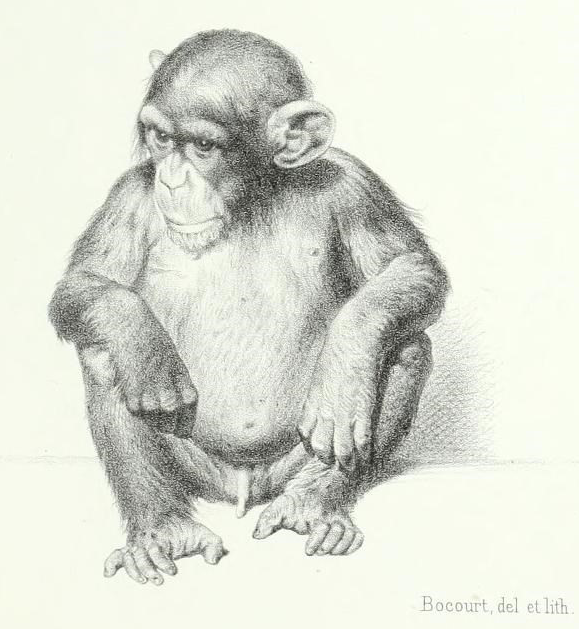
Clustering based on assignment methods.
While it is great to be able to assign our individuals to a particular population, these ideas can be pushed to learn about how best to describe our genotype data in terms of discrete populations without assigning any of our individuals to populations a priori. We wish to cluster our individuals into \(K\) unknown populations. We begin by assigning our individuals at random to these \(K\) populations.
Given these assignments we estimate the allele frequencies at all of our loci in each population.
Given these allele frequencies we chose to reassign each individual to a population \(k\) with a probability given by Equation 3.9.
We iterate steps 1 and 2 for many iterations (technically, this approach is known as Gibbs Sampling). If the data is sufficiently informative, the assignments and allele frequencies will quickly converge on a set of likely population assignments and allele frequencies for these populations.
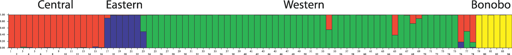
To do this in a full Bayesian scheme we need to place priors on the allele frequencies (for example, one could use a beta distribution prior). Technically we are using the joint posterior of our allele frequencies and assignments. Programs like STRUCTURE, use this type of algorithm to cluster the individuals in an “unsupervised” manner (i.e. they work out how to assign individuals to an unknown set of populations). See Figure 3.5 for an example of Becquet et al. (2007) using STRUCTURE to determine the population structure of chimpanzees.
STRUCTURE-like methods have proven incredible popular and useful in examining population structure within species. However, the results of these methods are open to misinterpretation; see Lawson et al. (2018) for a recent discussion. Two common mistakes are 1) taking the results of STRUCTURE-like approaches for some particular value of K and taking this to represent the best way to describe population-genetic variation. 2) Thinking that these clusters represent ‘pure’ ancestral populations.
There is no right choice of K, the number of clusters to partition into. There are methods of judging the ‘best’ K by some statistical measure given some particular dataset, but that is not the same as saying this is the most meaningful level on which to summarize population structure in data. For example, running STRUCTURE on world-wide human populations for low value of K will result in population clusters that roughly align with continental populations (Rosenberg et al. 2002). However, that does not tell us that assigning ancestry at the level of continents is a particularly meaningful way of partitioning individuals. Running the same data for higher value of K, or within continental regions, will result in much finer-scale partitioning of continental groups (Rosenberg et al. 2002; Li et al. 2008). No one of these layers of population structure identified is privileged as being more meaningful than another.
It is tempting to think of these clusters as representing ancestral populations, which themselves are not the result of admixture. However, that is not the case, for example, running STRUCTURE on world-wide human data identifies a cluster that contains many European individuals, however, on the basis of ancient DNA we know that modern Europeans are a mixture of distinct ancestral groups.
Principal components analysis
Principal component analysis (PCA) is a common statistical approach to visualize high dimensional data, and used by many fields. The idea of PCA is to give a location to each individual data-point on each of a small number principal component axes. These PC axes are chosen to reflect major axes of variation in the data, with the first PC being that which explains largest variance, the second the second most, and so on. The use of PCA in population genetics was pioneered by Cavalli-Sforza and colleagues and now with large genotyping datasets, PCA has made a comeback. (Menozzi et al. 1978; Patterson et al. 2006)
Consider a dataset consisting of N individuals at \(S\) biallelic SNPs. The \(i^{th}\) individual’s genotype data at locus \(\ell\) takes a value \(g_{i,\ell}=0,1,\; \text{or} \; 2\) (corresponding to the number of copies of allele \(A_1\) an individual carries at this SNP). We can think of this as a \(N \times S\) matrix (where usually \(N \ll S\)).
Denoting the sample mean allele frequency at SNP \(\ell\) by \(p_{\ell}\), it’s common to standardize the genotype in the following way
\[\frac{g_{i,\ell} - 2 p_{\ell}}{\sqrt{2 p_{\ell}(1-p_{\ell})}} \tag{3.13}\]
i.e. at each SNP we center the genotypes by subtracting the mean genotype (\(2p_{\ell}\)) and divide through by the square root of the expected variance assuming that alleles are sampled binomially from the mean frequency (\(\sqrt{2 p_{\ell} (1-p_{\ell})}\)). Doing this to all of our genotypes, we form a data matrix (of dimension \(N \times S\)). We can then perform principal component analysis of this data matrix to uncover the major axes of genotype variance in our sample. Figure 3.6 shows a PCA from Becquet et al. (2007) using the same chimpanzee data as in Figure 3.5.
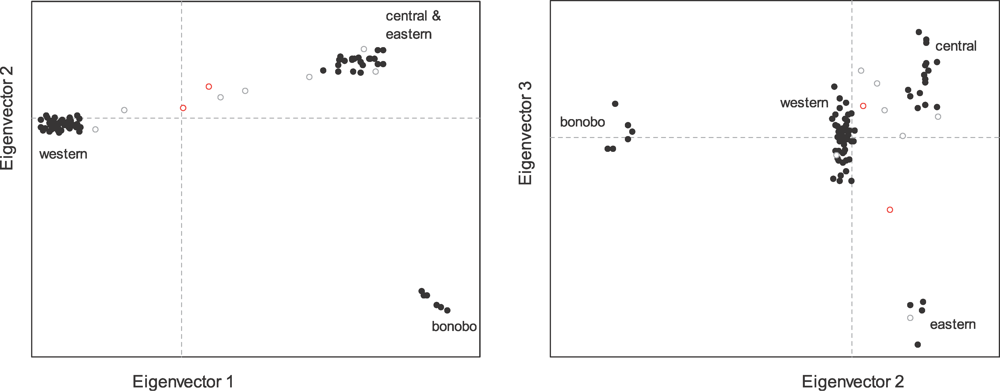
It is worth taking a moment to delve further into what we are doing here. There’s a number of equivalent ways of thinking about what PCA is doing. One of these ways is to think that when we do PCA we are building the individual by individual covariance matrix and performing an eigenvalue decomposition of this matrix (with the eigenvectors being the PCs). This individual by individual covariance matrix has entries the \([i,~j]\) given by
\[\frac{1 }{S-1} \sum_{\ell=1}^S \frac{(g_{i,\ell} - 2p_{\ell})(g_{j,\ell} - 2p_{\ell})}{2 p_{\ell}(1-p_{\ell})} \tag{3.14}\]
Note that this is the sample covariance of our standardized allele frequencies (Equation 3.13), and is very similar to those we encountered in discussing \(F\)-statistics as correlations (Equation 3.6), except now we are asking about the covariance between two individuals above that expected if they were both drawn from the total sample at random (rather than the covariance of alleles within a single individual). So by performing PCA on the data we are learning about the major (orthogonal) axes of the kinship matrix.
As an example of the application of PCA, let’s consider the case of the putative ring species in the greenish warbler (Phylloscopus trochiloides) species complex. This set of subspecies exists in a ring around the edge of the Himalayan plateau. Alcaide et al. (2014) collected \(95\) greenish warbler samples from \(22\) sites around the ring, and the sampling locations are shown in Figure 3.7.
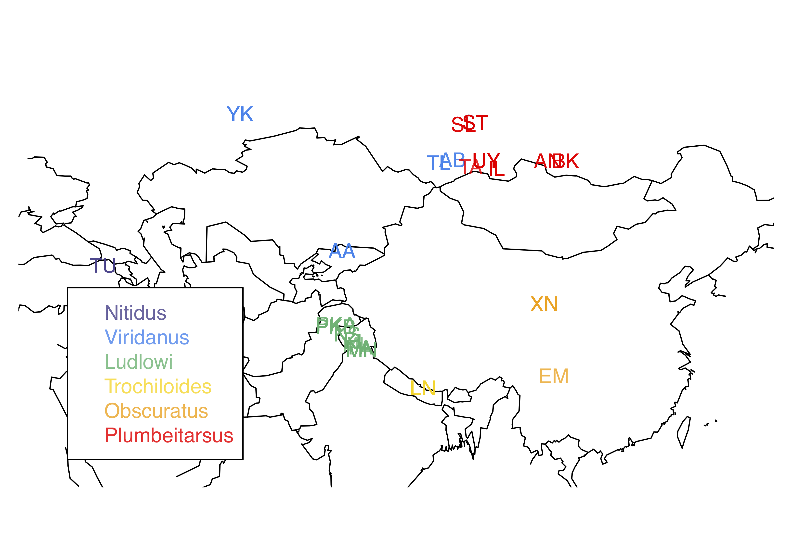
It is thought that these warblers spread from the south, northward in two different directions around the inhospitable Himalayan plateau, establishing populations along the western edge (green and blue populations) and the eastern edge (yellow and red populations). When they came into secondary contact in Siberia, they were reproductively isolated from one another, having evolved different songs and accumulated other reproductive barriers from each other as they spread independently north around the plateau, such that P. t. viridanus (blue) and P. t. plumbeitarsus (red) populations presently form a stable hybrid zone.
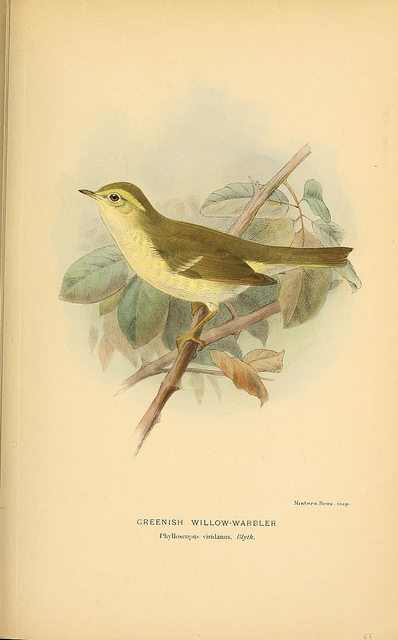
Alcaide et al. (2014) obtained sequence data for their samples at 2,334 snps. In Figure 3.9 you can see the matrix of kinship coefficients, using Equation 3.14, between all pairs of samples. You can already see a lot about population structure in this matrix. Note how the red and yellow samples, thought to be derived from the Eastern route around the Himalayas, have higher kinship with each other, and blue and the (majority) of the green samples, from the Western route, form a similarly close group in terms of their higher kinship.
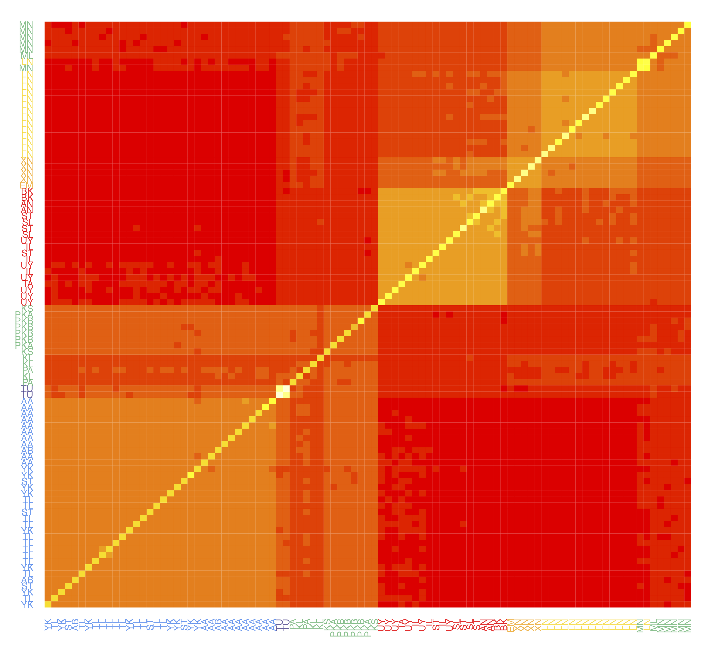
We can then perform PCA on this kinship matrix to identify the major axes of variation in the dataset. Figure 3.10 shows the samples plotted on the first two PCs.
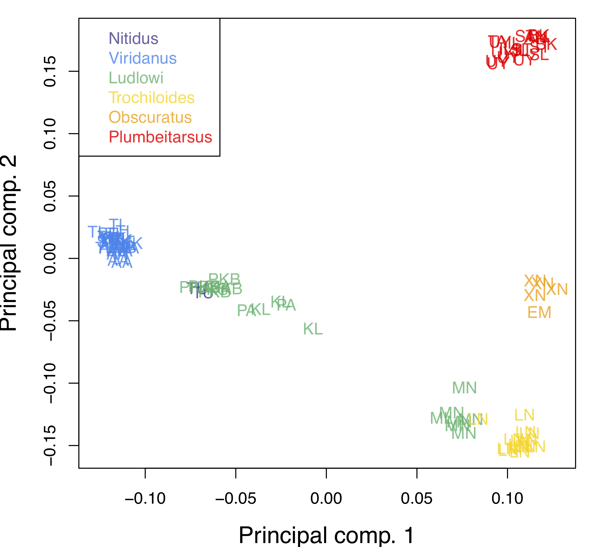
The two major routes of expansion clearly occupy different parts of PC space. The first principal component distinguishes populations running North to South along the western route of expansion, while the second principal component distinguishes among populations running North to South along the Eastern route of expansion. Thus genetic data supports the hypothesis that the greenish warblers speciated as they moved around the Himalayan plateau. However, as noted by Alcaide et al. (2014), it also suggests additional complications to the traditional view of these warblers as an unbroken ring species, a case of speciation by continuous geographic isolation. The Ludlowi subspecies shows a significant genetic break, with the southern most MN samples clustering with the Trochiloides subspecies, in both the PCA and kinship matrix (Figures 3.10 and 3.9), despite being much more geographically close to the other Ludlowi samples. This suggests that genetic isolation is not just a result of geographic distance, and other biogeographic barriers must be considered in the case of this broken ring species.
Finally, while PCA is a wonderful tool for visualizing genetic data, care must be taken in its interpretation. The U-like shape in the case of the greenish warbler PC might be consistent with some low level of gene flow between the red and the blue populations, pulling them genetically closer together and helping to form a genetic ring as well as a geographic ring. However, U-like shapes are expected to appear in PCAs even if our populations are just arrayed along a line, and more complex geometric arrangements of populations in PC space can result under simple geographic models (Novembre and Stephens 2008). Inferring the geographical and population-genetic history of species requires the application of a range of tools; see Alcaide et al. (2014) and Bradburd et al. (2016) for more discussion of the greenish warblers.
Correlations between loci, linkage disequilibrium, and recombination
Up to now we have been interested in correlations between alleles at the same locus, e.g. correlations within individuals (inbreeding) or between individuals (relatedness). We have seen how relatedness between parents affects the extent to which their offspring is inbred. We now turn to correlations between alleles at different loci.
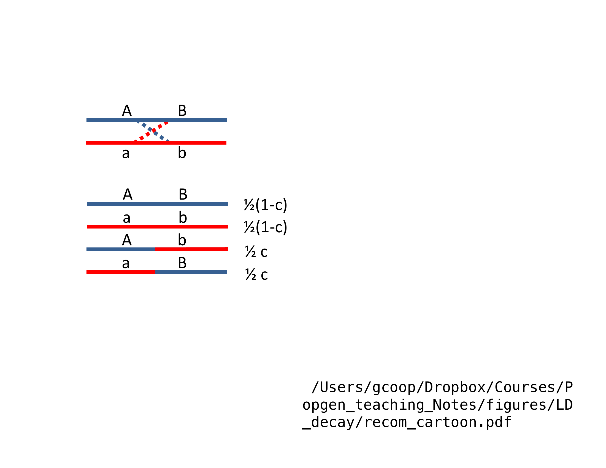
Recombination. To understand correlations between loci we need to understand recombination a bit more carefully. Let us consider a heterozygous individual, containing \(AB\) and \(ab\) haplotypes. If no recombination occurs between our two loci in this individual, then these two haplotypes will be transmitted intact to the next generation. While if a recombination (i.e. an odd number of crossing over events) occurs between the two parental haplotypes, then \({}^{1}\!/\!{}_{2}\) the time the child receives an \(Ab\) haplotype and \({}^{1}\!/\!{}_{2}\) the time the child receives an \(aB\) haplotype. See Figure 3.11. Effectively, recombination breaks up the association between loci. For linked markers we’ll define the recombination fraction (\(x\)) to be the probability of an odd number of crossing over events between our loci in a single meiosis. The recombination fraction between a pair of loci can range from \(0\) to \({}^{1}\!/\!{}_{2}\), with \(c={}^{1}\!/\!{}_{2}\) corresponding markers far enough apart on a chromosome that many recombination events occur between them (loci on different automosomes also have a \(c={}^{1}\!/\!{}_{2}\)). In practice we’ll often be interested in relatively short regions such that recombination is relatively rare, and so we might think that \(c=c_{BP}L \ll \frac{1}{2}\), where \(c_{BP}\) is the average recombination rate (in Morgans) per base pair (typically \(\sim 10^{-8}\) ) and L is the number of base pairs separating our two loci.
Linkage disequilibrium. The (horrible) phrase linkage disequilibrium (LD) refers to the statistical non-independence (i.e. a correlation) of alleles in a population at different loci (Lewontin and Kojima 1960; Slatkin 2008). It’s a fantastically useful concept; LD is key to our understanding of diverse topics, from sexual selection and speciation to the limits of genome-wide association studies.
Our two biallelic loci, which segregate alleles \(A/a\) and \(B/b\), have allele frequencies of \(p_A\) and \(p_B\) respectively. The frequency of the two locus haplotype AB is \(p_{AB}\), and likewise for our other three combinations. If our loci were statistically independent then \(p_{AB} = p_Ap_B\), otherwise \(p_{AB} \neq p_Ap_B\) We can define a covariance between the \(A\) and \(B\) alleles at our two loci5 as
5 Here again we are making use of a covariance of discrete random variables, see Appendix Equation A.40, where the first variable is drawing haplotype with an \(A\) at the first locus, and the second is drawing a B allele at the other locus.
\[D_{AB} = p_{AB} - p_Ap_B \tag{3.15}\]
and likewise for our other combinations at our two loci (\(D_{Ab},~D_{aB},~D_{ab}\)). Gametes with two similar case alleles (e.g. A and B, or a and b) are known as coupling gametes, and those with different case alleles are known as repulsion gametes (e.g. a and B, or A and b). Then, we can think of \(D\) as measuring the excess of coupling to repulsion gametes. These \(D\) statistics are all closely related to each other as \(D_{AB} = - D_{Ab}\) and so on. Thus we only need to specify one \(D_{AB}\) to know them all, so we’ll drop the subscript and just refer to \(D\). Also a handy result is that we can rewrite our haplotype frequency \(p_{AB}\) as
\[p_{AB} = p_Ap_B+D. \tag{3.16}\]
If \(D=0\) we’ll say the two loci are in linkage equilibrium, while if \(D>0\) or \(D<0\) we’ll say that the loci are in linkage disequilibrium (we’ll perhaps want to test whether \(D\) is statistically different from \(0\) before making this choice). Linkage disequilibrium is a horrible phrase, as it risks muddling the concepts of genetic linkage and linkage disequilibrium. Genetic linkage refers to the linkage of multiple loci due to the fact that they are transmitted through meiosis together (most often because the loci are on the same chromosome). Linkage disequilibrium merely refers to the covariance between the alleles at different loci; this may in part be due to the genetic linkage of these loci but does not necessarily imply this (e.g. genetically unlinked loci can be in LD due to population structure).
Question 3.4 You genotype 2 bi-allelic loci (A & B) segregating in two mouse subspecies (1 & 2) which mate randomly among themselves, but have not historically interbreed since they speciated. The frequencies of haplotypes in each population are:
| Pop | \(p_{AB}\) | \(p_{Ab}\) | \(p_{aB}\) | \(p_{ab}\) |
|---|---|---|---|---|
| 1 | .02 | .18 | .08 | .72 |
| 2 | .72 | .18 | .08 | .02 |
A) How much LD is there within species? (i.e. estimate D)
B) If we mixed individuals from the two species together in equal proportions, we could form a new population with \(p_{AB}\) equal to the average frequency of \(p_{AB}\) across species 1 and 2. What value would D take in this new population before any mating has had the chance to occur?
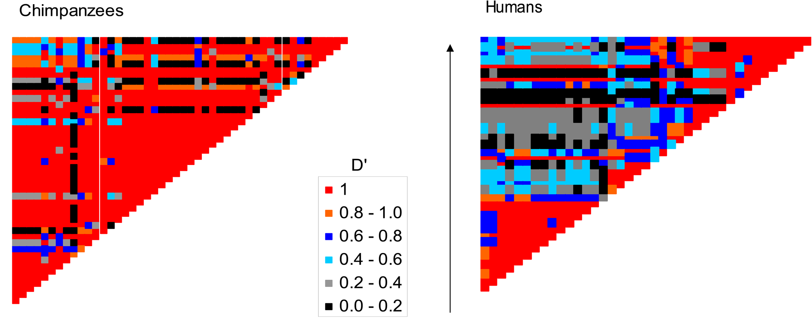
Our linkage disequilibrium statistic \(D\) depends strongly on the allele frequencies of the two loci involved. One common way to partially remove this dependence, and make it more comparable across loci, is to divide \(D\) through by its maximum possible value given the frequency of the loci. This normalized statistic is called \(D^{\prime}\) and varies between \(+1\) and \(-1\). In Figure 3.12 there’s an example of LD across the TAP2 region in human and chimp. Notice how physically close SNPs, i.e. those close to the diagonal, have higher absolute values of \(D^{\prime}\) as closely linked alleles are separated by recombination less often allowing high levels of LD to accumulate. Over large physical distances, away from the diagonal, there is lower \(D^{\prime}\). This is especially notable in humans as there is an intense, human-specific recombination hotspot in this region, which is breaking down LD between opposite sides of this region.
Another common statistic for summarizing LD is \(r^2\) which we write as
\[r^2 = \frac{D^2}{p_A(1-p_A) p_B(1-p_B) } \tag{3.17}\]
As \(D\) is a covariance, and \(p_A(1-p_A)\) is the variance of an allele drawn at random from locus \(A\), \(r^2\) is the squared correlation coefficient.6
fraction.
6 See Appendix Equation A.42 for the definition of a correlation coefficient.
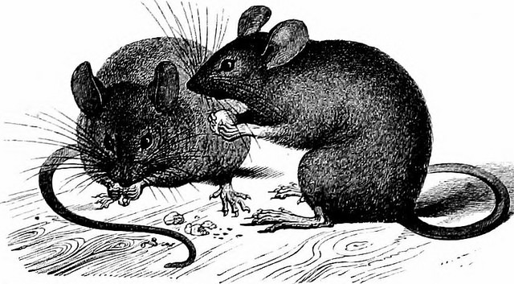
Figure 3.14 shows \(r^2\) for pairs of SNPs at various physical distances in two population samples of Mus musculus domesticus. Again LD is highest between physically close markers as LD is being generated faster than it can decay via recombination; more distant markers have much lower LD as here recombination is winning out. Note the decay of LD is much slower in the advanced-generation cross population than in the natural wild-caught population. This persistence of LD across megabases is due to the limited number of generations for recombination since the cross was created.
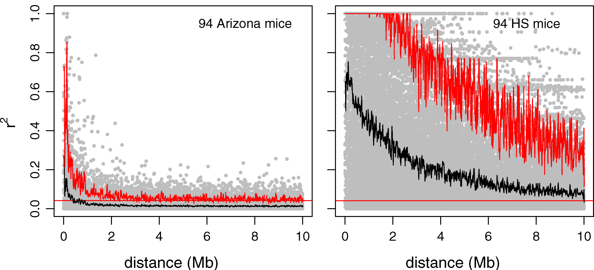
The generation of LD. Various population genetic forces can generate LD (Slatkin 2008). Selection can generate LD by favouring particular combinations of alleles. Genetic drift will also generate LD, not because particular combinations of alleles are favoured, but simply because at random particular haplotypes can by chance drift up in frequency. Mixing between divergent populations can also generate LD (Nei and Li 1973), as we saw in the mouse question above.
The decay of LD due to recombination.
We will now examine what happens to LD over the generations if, in a very large population (i.e. no genetic drift and frequencies of our loci thus follow their expectations), we only allow recombination to occur. To do so, consider the frequency of our \(AB\) haplotype in the next generation, \(p_{AB}^{\prime}\). We lose a fraction \(c\) of our \(AB\) haplotypes to recombination ripping our alleles apart but gain a fraction \(cp_A p_B\) per generation from other haplotypes recombining together to form \(AB\) haplotypes. Thus in the next generation
\[p_{AB}^{\prime} = (1-c)p_{AB} + cp_Ap_B \tag{3.18}\]
The last term above, in Equation 3.18, is \(c(p_{AB}+p_{Ab})(p_{AB}+p_{aB})\) simplified, which is the probability of recombination in the different diploid genotypes that could generate a \(p_{AB}\) haplotype.
We can then write the change in the frequency of the \(p_{AB}\) haplotype as
\[\Delta p_{AB} = p_{AB}^{\prime} -p_{AB} = -c p_{AB} + cp_Ap_B = - c D \tag{3.19}\]
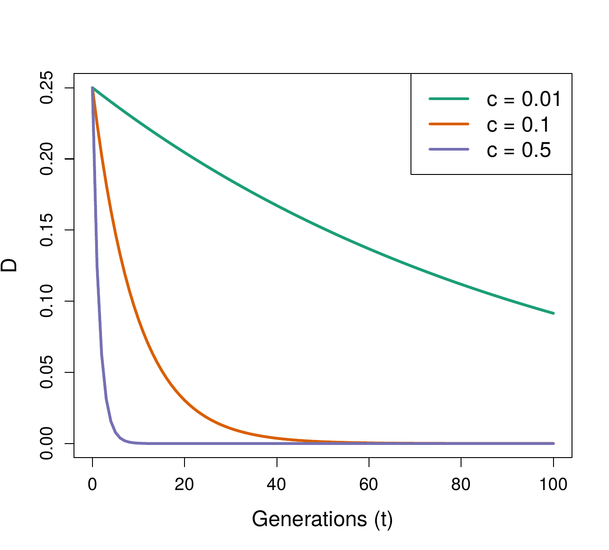
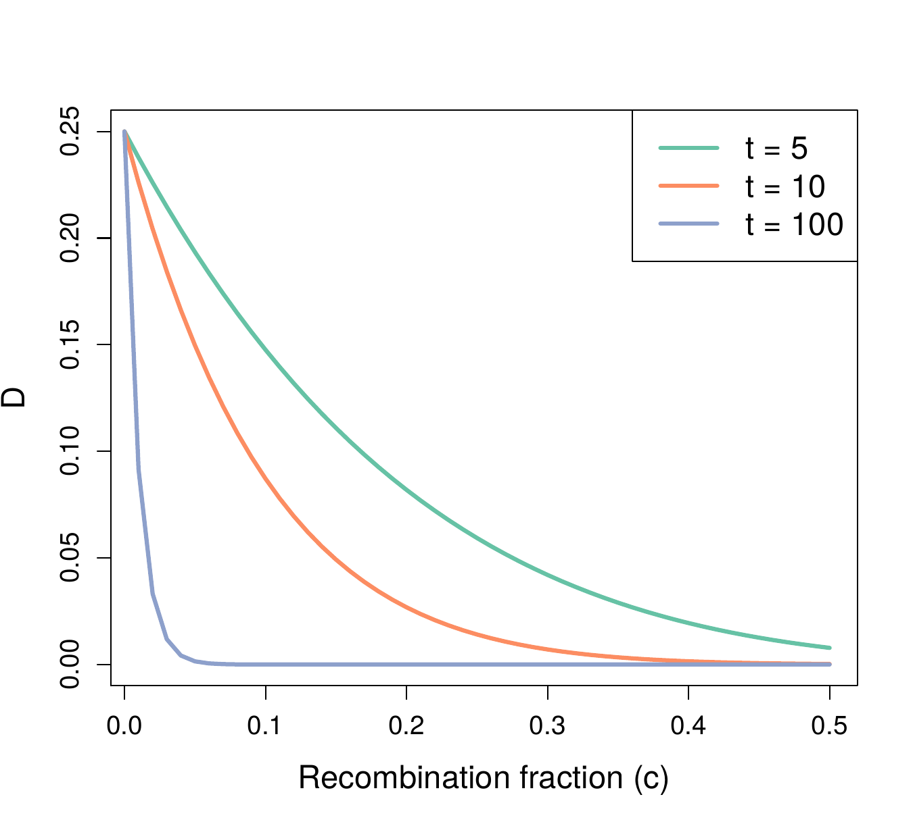
So recombination will cause a decrease in the frequency of \(p_{AB}\) if there is an excess of \(AB\) haplotypes within the population (\(D>0\)), and an increase if there is a deficit of \(AB\) haplotypes within the population (\(D<0\)). Our LD in the next generation is
\[\begin{aligned} D^{\prime} & = p_{AB}^{\prime} - p'_{A}p'_{B} \\ & = (p_{AB} + \Delta p_{AB}) - (p_{A} + \Delta p_{A})(p_{B} + \Delta p_{B}) \\ & = p_{AB} + \Delta p_{AB} - p_{A}p_{B} \\ & = (1-c) D \end{aligned}\]
where we can cancel out \(\Delta p_{A}\) and \(\Delta p_{B}\) above because recombination only changes haplotype, not allele, frequencies. So if the level of LD in generation \(0\) is \(D_0\), the level \(t\) generations later (\(D_t\)) is
\[D_t= (1-c)^t D_0 \tag{3.20}\]
Recombination is acting to decrease LD, and it does so geometrically at a rate given by \((1-c)\) (Weinberg 1909; Jennings 1917). If \(c \ll 1\) then we can approximate this by an exponential and say that
\[D_t \approx D_0 e^{-ct} \tag{3.21}\]
which follows from a Taylor series expansion, see Appendix Equation A.3.
Question 3.5 You find a hybrid population between the two mouse subspecies described in the question above, which appears to be comprised of equal proportions (\(50/50\)) of ancestry from the two subspecies. You estimate LD between the two markers to be \(D=0.0723\). On the basis of previous work you estimate that the two loci are separated by a recombination fraction of 0.1. Assuming that this hybrid population is large and was formed by a single mixture event, can you estimate how long ago this population formed?
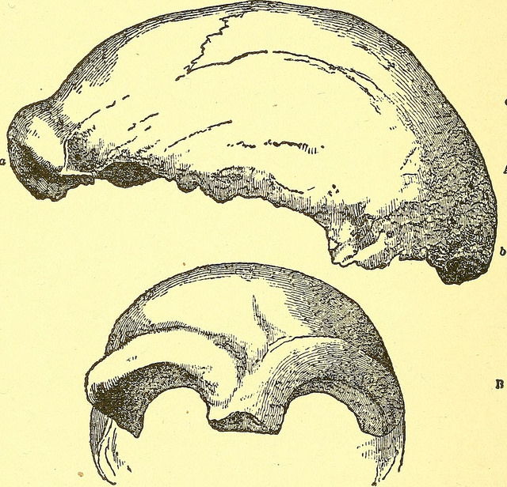
A particularly striking example of the decay of LD generated by the mixing of populations is offered by the LD created by the interbreeding between humans and Neanderthals (Sankararaman 2012). Neanderthals and modern humans diverged from each other likely over half a million years ago, allowing time for allele frequency differences to accumulate between the Neanderthal and modern human populations. The two populations spread back into secondary contact when humans moved out of Africa over the past hundred thousand years or so. One of the most exciting findings from the sequencing of the Neanderthal genome was that modern-day people with Eurasian ancestry carry a few percent of their genome derived from the Neanderthal genome, via interbreeding during this secondary contact (Green et al. 2010). To date the timing of this interbreeding, Sankararaman (2012) looked at the LD in modern humans between pairs of alleles found to be derived from the Neanderthal genome (and nearly absent from African populations). In Figure 3.18 we show the average LD between these loci as a function of the genetic distance (\(c\)) between them, from the work of Sankararaman (2012).
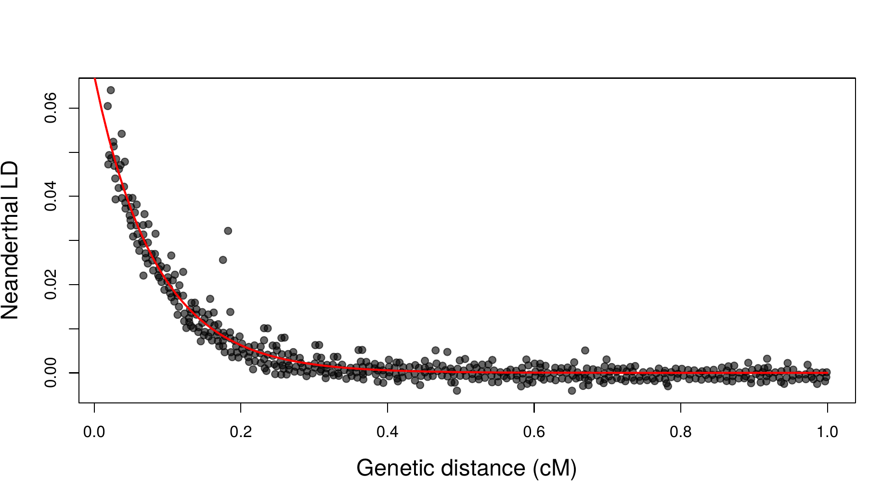
Assuming a recombination rate \(r\), we can fit the exponential decay of LD predicted by Equation 3.21 to the data points in this figure; the fit is shown as a red line. Doing this we estimate \(t=1200\) generations, or about 35 thousand years (using a human generation time of 29 years). Thus the LD in modern Eurasians, between alleles derived from the interbreeding with Neanderthals, represents over thirty thousand years of recombination slowly breaking down these old associations. 7
7 The calculation done by Sankararaman (2012) is actually a bit more involved as they account for inhomogeneity in recombination rates and arrive at a date of 47,334 – 63,146 years.
Chapter summary.
Individuals often mate non-randomly, e.g. by geographical location, this generates population genetic structure that can be thought of as a form of inbreeding. This inbreeding at a population level leads to a reduction in heterozygosity within sub-populations as compared to the total population (if allele frequencies differ across populations).
Wright’s \(F\) statistics can be used to measure the extent of population structure, describing the reduction in heterozygosity at various scales, for example the individual compared to the sub-population (\(F_{IS}\)) or the sub-population compared to the total population (\(F_{ST}\)). We can calculate these statistics either genome-wide or at individual loci.
These \(F\) statistics can be understood as expressing a correlation between alleles drawn from the same level of population structure, or the proportion of genetic variance explained by population structure.
Other ways to visualize population structure include STRUCTURE-like approaches, which are based on assigning individuals to populations based on the likelihood of their genotype given allele frequencies (assignment methods) and learning the assignment of individuals to discrete populations. Another common approach relies on identifying major axes of variation in relatedness via Principal components analysis.
We’ll often be interested in covariances and correlations among alleles at different loci, linkage disequilibrium (LD).
Covariance between loci (LD) can arise between loci for a variety of reasons, notably population structure and admixture as described in the chapter.
The decay of LD due recombination can be modelled and potentially used to date when LD was generated (e.g. via admixture).
Question 3.6 The loss of heterozygosity due to inbreeding can be partitioned across F statistics at multiple levels. For example we can partition the total inbreeding coefficient of a individuals (\(F_{IT}\)) compared to a population between \(F_{IS}\) and \(F_{ST}\). For the following example scenarios, do you expect \(F_{IS}\) to be larger or smaller than \(F_{ST}\)? Explain your answer.
A) Charles II, where the subpopulation is Spain and the total population is Europeans.
B) Subpopulations of plants living on a moutainside, where pollen disperses long distances via wind, butindividuals self-pollinate about 50% of the time,
C) Fish that live in lakes with very few accessible waterways between lakes, but where the fish swim freely within lakes. Each lake is a subpopulation and the entire lake basin is the total population.
Question 3.7 In a species of beetle, the colour and shape of the wings are controlled by two distinct polymorphisms (with alleles big/small and red/yellow respectively). In a museum collection you estimate the frequency of the four haplotypes to be:
| big/red | big/yellow | small/red | small/yellow |
|---|---|---|---|
| 0.69 | 0.00 | 0.09 | 0.22 |
This collection is from 60 years ago. In present day populations you estimate the frequencies of the haplotypes to be:
| 0.5452 | 0.1448 | 0.2348 | 0.0752 |
A) Assuming one generation per year, what is the recombination fraction between these loci?
B) Qualitatively, how would your answer change if you determined that crossing over only occurred in females and not in males?